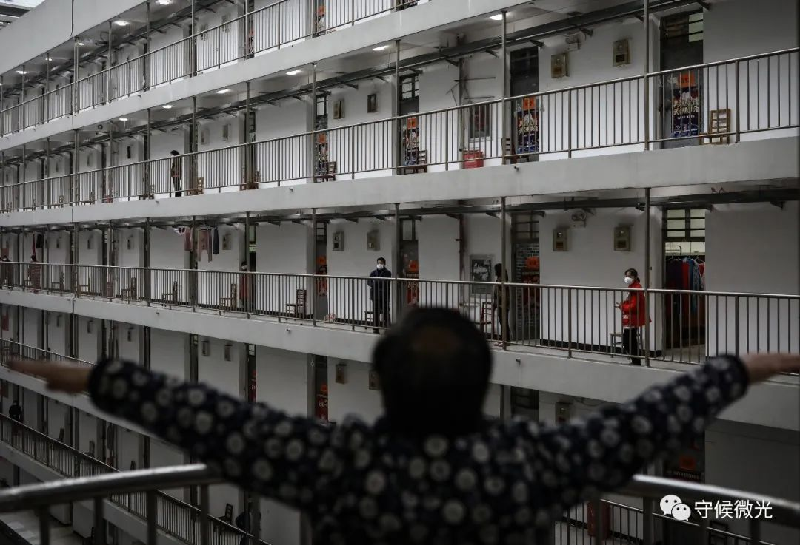
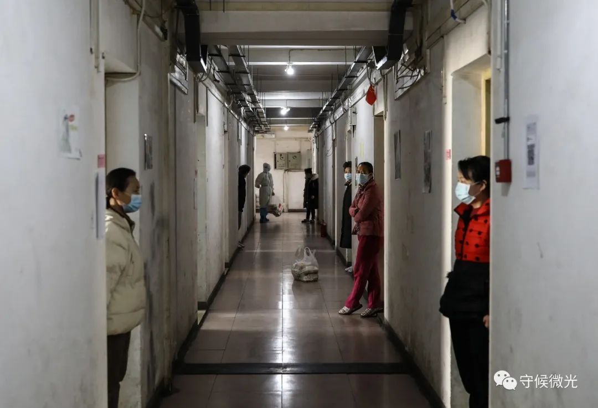
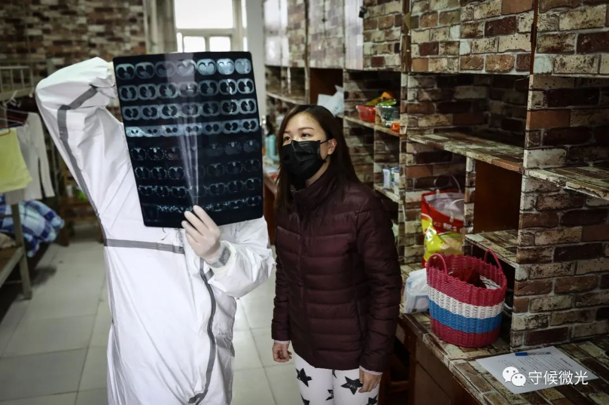
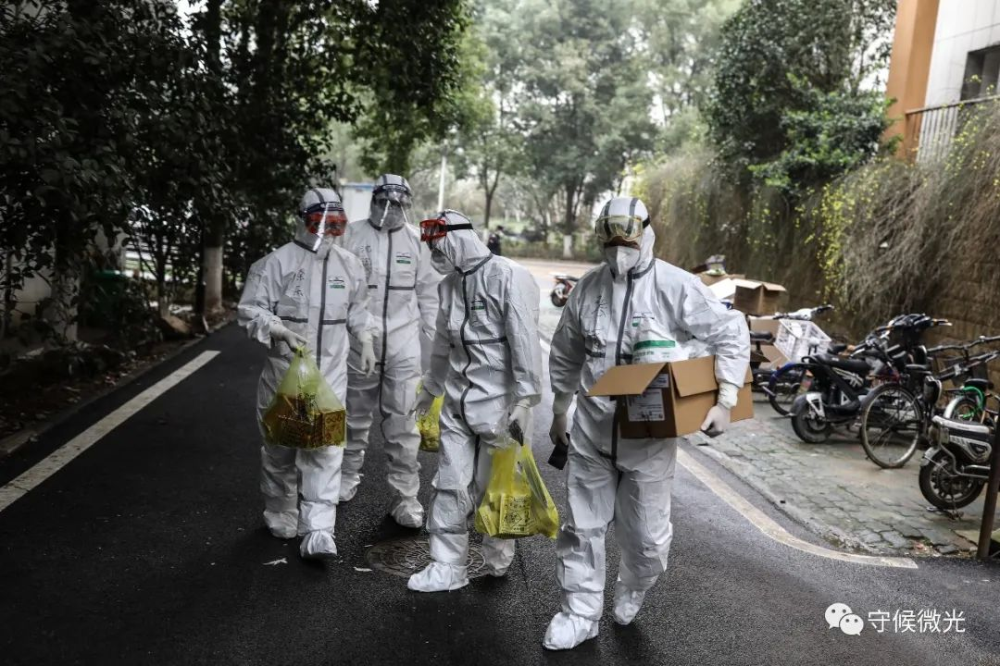
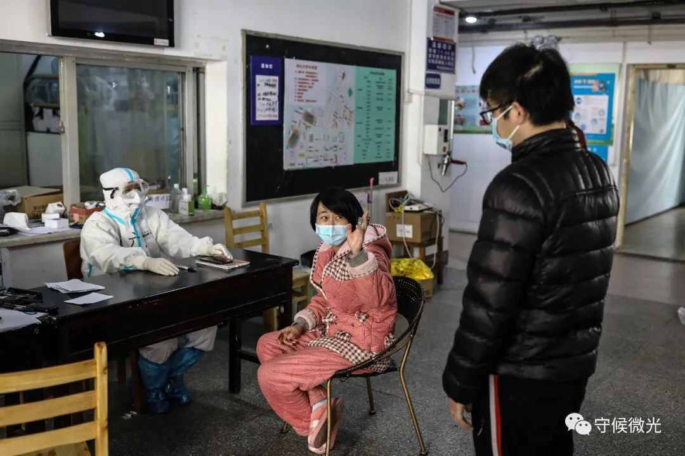
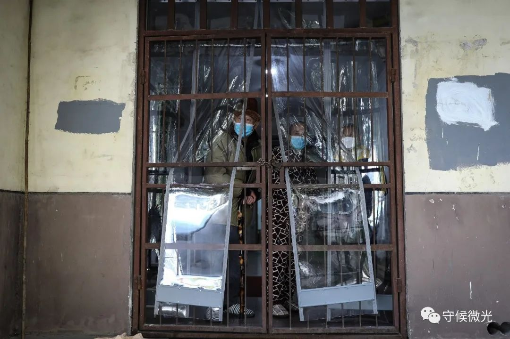
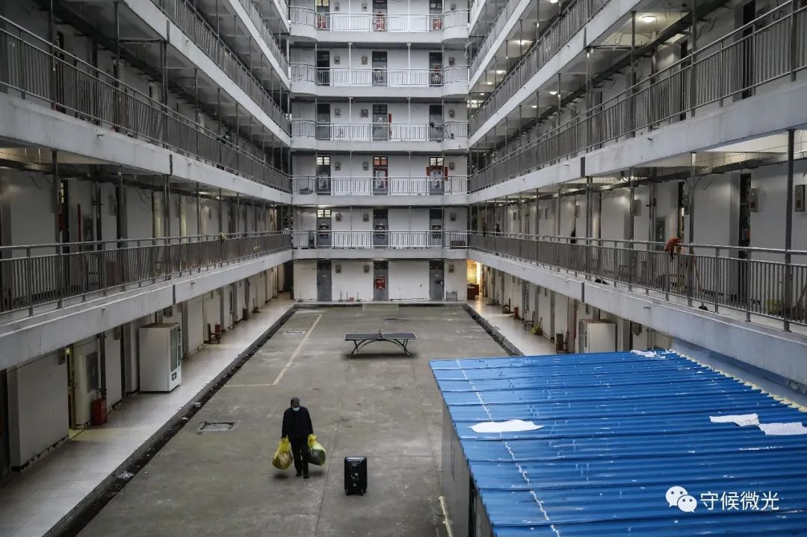

德国疫情日记③：意外的感动
原文链接 备份链接 体坛周报全媒体驻德国记者 杨子江 在国内的时候我看过一篇自媒体的文章，讲的是欧洲各国的花式撤侨：法国把撤回的人安置再蓝色海岸线普罗旺斯的度假村，德国人被送往了军事基地，待遇可谓是迥然不同——虽然我没拿德国护照，但在飞机 …

3月13日晚，武汉软件工程职业学院康复驿站，一名刚刚到达这里的康复隔离人员在走廊上眺望天空。他们都是从方舱医院和各医疗机构治愈出院的新冠肺炎患者，将在这里接受14天的隔离观察，这是他们回家前的最后一站。中青报·中青网记者 赵迪/摄
中青报·中青网记者 赵迪 摄影报道
3月10日，34岁的张蒙躺在湖北大学康复驿站的床上，呆望着天花板上的灯管，她还是不能相信自己出院后核酸检测的结果呈阳性。
张蒙的家庭遭受了新冠病毒的重创。两个月的时间里，60岁的母亲离开了，父亲住进了武汉大学人民医院东院的重症病房，她和丈夫也被感染了。检测结果出来的第二天，一觉醒来，眼泪从张蒙的眼角滑落，她又一次想起了一家人在这场风暴中的点滴。
2月29日，张蒙和丈夫从武昌方舱医院出院后，住进了湖北大学康复驿站。这个由学生公寓改造的集中隔离观察点，被称为武汉最大的康复驿站，可入住1300人，专门接收从方舱医院和各医疗机构出院的新冠肺炎患者。
根据相关要求，新冠肺炎治愈患者要在康复驿站进行为期14天的隔离和医学观察，达到医学标准后，才能解除隔离回家。从确诊到恢复正常生活，康复驿站是他们回家前的最后一站。

2月27日，武汉软件工程职业学院康复驿站，医务人员张清抬头查看楼上的情况。中青报·中青网记者 赵迪/摄

2月27日，武汉软件工程职业学院康复驿站，一名康复隔离人员在锻炼。中青报·中青网记者 赵迪/摄

3月14日，湖北大学康复驿站，在等待拿饭的间隙，康复隔离人员们短暂交流。中青报·中青网记者 赵迪/摄
 3月14日，湖北大学康复驿站，一名工作人员在给康复隔离人员送饭。中青报·中青网记者 赵迪/摄
3月14日，湖北大学康复驿站，一名工作人员在给康复隔离人员送饭。中青报·中青网记者 赵迪/摄

2月27日，武汉软件工程职业学院康复驿站，医护人员在帮黎婧看胸片。黎婧是一名插画师，隔离期间，她画了许多关于疫情的漫画。中青报·中青网记者 赵迪/摄

2月27日，武汉软件工程职业学院康复驿站，黎婧展示自己绘制的疫情主题漫画。中青报·中青网记者 赵迪/摄
据在此工作的医疗志愿者方广斌介绍，在湖北大学康复驿站的7栋楼里，目前入住了超过千名隔离观察人员。他们的身份形形色色，有退休老人、公务员、商贩、教师、被感染的医护人员，还有高三学生。除了武汉本地人，还有外地打工者、过年探亲的家属。年龄和职业在口罩的遮挡下，已经变得模糊，但每个人都与这座城市的命运紧紧连在一起。
平日，康复驿站楼里是安静的，墙上贴着“中国必胜”“武汉加油”的标语漫画，防护服摩擦的声音常在耳边响起，学校发给老人的收音机里，不时传来新闻播报声。
张蒙和丈夫住在同一层，中间只隔了一道墙。但和这里的大多数人一样，为了防止出现意外复阳交叉感染，大家都各自待在屋里，只有在等待领饭、一同打热水时才能见面。有时候，他们也会戴着口罩在门口聊上几分钟。每次和孩子视频，他们屏幕上都是3个画面，孩子和奶奶一个，张蒙和丈夫各一个。
张蒙觉得，这是隔离点和自己待过的方舱医院最大的不同：方舱医院是敞开的，可以和周围的人聊天说话；而在这里，要一个人独处。
如果不是核酸检测复阳，张蒙会在3月14日同170名两次核酸检测呈阴性、结束14天隔离观察的新冠肺炎康复者一起回到家中。“虽然回到家仍然不能出门，但感觉还是不一样。”张蒙的丈夫两次核酸检测都是阴性，但为了陪妻子，他选择了留下来。
对苗阿姨来说，在隔离点的日子成为她最“自我”的时候。70岁的她打算在14天内读完余秋雨的《行者无疆》，有时候她也会对着镜子唱唱喜欢的红色歌曲、跳跳舞，那些生活琐事，在这里似乎都已消散。
湖北水利水电职业技术学院大二学生小方的隔离点生活还是正常节奏：每天上午10点20分开始上网课，下午5点多结束，其余的时间，他会用来看美剧、综艺节目、听贾斯汀·比伯的歌曲。现在，他已经结束隔离回到家中，但他在家也会戴着口罩，和妈妈保持一定距离，他还是担心会发生什么，把母亲传染了。
37岁的护士潘雅琴在湖北大学康复驿站正式接收病人的第一天就投入工作了，同在这里工作的医疗志愿者方广斌和同事们要负责上百名患者、24小时值班，但他们都在辛苦之外感到了自豪。他们和这里其他医护人员一样，喜欢称呼隔离观察人员为“家人”，在他们看来，大家都生活在同一个城市、同一个国家，“当然是家人”。

2月27日，武汉软件工程职业学院康复驿站，几名医务人员携带中药准备进入隔离区为康复隔离人员理疗。中青报·中青网记者 赵迪/摄

2月27日，武汉软件工程职业学院康复驿站，几名医护人员在询问康复隔离人员近况。中青报·中青网记者 赵迪/摄

2月27日，武汉软件职业工程学院，一名医务人员在和康复隔离人员沟通。中青报·中青网记者 赵迪/摄

3月14日，湖北大学康复驿站，两名康复隔离人员在相互诉说自身的情况。中青报·中青网记者 赵迪/摄

3月14日，湖北大学康复驿站，几名康复隔离人员在门口探望。中青报·中青网记者 赵迪/摄
 3月14日，湖北大学康复驿站，一名站在走廊门口的康复隔离人员。中青报·中青网记者 赵迪/摄
3月14日，湖北大学康复驿站，一名站在走廊门口的康复隔离人员。中青报·中青网记者 赵迪/摄
位于武汉市东湖新技术开发区的武汉软件工程职业学院也设立了康复驿站。截至3月14日，这里累计收治新冠肺炎治愈患者800余人。
67岁的刘爱芬3月13日从武汉天佑医院出院后来到这里，在这次疫情中，她的老伴、儿子、儿媳也都被感染了。刘爱芬并不担心这里的生活，牙膏牙刷、拖鞋、脸盆、香皂等生活用品，工作人员在他们来之前已经准备好了，一日三餐也是经过悉心搭配的。
刘爱芬是轻症，她没有把一家人感染的事告诉亲戚朋友。一是怕他们担心，二是不确定出院了如何和他们相处。即便治愈了，她也担心对方如何对待自己。之前在一个隔离点，一名因密切接触被隔离的男士看她身体没什么问题，就与她畅快地聊了起来，但当得知刘爱芬核酸检测是阳性后，便马上变了态度，即使两人都戴了口罩，他也匆匆离开。刘爱芬打算，结束隔离回家后，今年也不再和亲戚朋友聚会了。
来自湖北省中医院的张清，从去年12月底就参与到战“疫”工作当中。目前，他的一部分工作是在武汉软件工程职业学院康复驿站、湖北大学康复驿站和洪山康复驿站进行中医康复理疗，包括针灸、足浴、中药调理、太极拳，等等。通过观察，张清觉得中医对康复期的患者起到了明显作用。
“在这次疫情当中，患者对于医生的信任度和依赖性都是之前很少遇到过的”。疫情期间医患关系的融洽，给张清留下了深刻的印象。医生冒着生命危险去救治、不计报酬地加班，患者们都看在眼里。

3月13日，武汉软件工程职业学院康复驿站，一名康复隔离人员由于状况不好需要转出，准备收拾行李离开。中青报·中青网记者 赵迪/摄

3月14日，湖北大学康复驿站，两名工作人员在向一位康复隔离人员发放“解除医学观察证明”。第二天，他将结束隔离，离开这里。中青报·中青网记者 赵迪/摄
 3月14日，湖北大学康复驿站，李爷爷坐在自己的房间看窗外。中青报·中青网记者 赵迪/摄
3月14日，湖北大学康复驿站，李爷爷坐在自己的房间看窗外。中青报·中青网记者 赵迪/摄

3月14日，湖北大学康复驿站，一名志愿者在进行巡查。中青报·中青网记者 赵迪/摄
病毒带来的阴霾在逐渐消散。截至3月17日24时，湖北新增疑似病例、现有疑似病例双“清零”。自3月11日起，武汉新增确诊病例维持在个位数，但近期连续5天出现了门诊新增病例。疫情趋势虽然逐渐向好，但防控的弦仍不能松。
3月17日，这一天是张蒙进行核酸复测的日子，她将在两天后收到检测结果。窗户外，透过防盗网，微风拂动着早春的新叶，透过空隙望去，远方的天空在渐渐变蓝。
（文中部分患者名为化名）
编辑 | 曲俊燕
中国青年报·中国青年网出品
微信编辑 | 陈轶男

觉得好看请点这里
原文链接 备份链接 体坛周报全媒体驻德国记者 杨子江 在国内的时候我看过一篇自媒体的文章，讲的是欧洲各国的花式撤侨：法国把撤回的人安置再蓝色海岸线普罗旺斯的度假村，德国人被送往了军事基地，待遇可谓是迥然不同——虽然我没拿德国护照，但在飞机 …
原文链接 备份链接 中午时分伦敦Tesco超市的牙膏架 拍摄：高山清 记者：田思奇 王磬 编辑：曾宇 “ 直到登机，一些被迫回国的同学仍在犹豫是走是留。落地后的检疫和隔离安排很细致，不少同学表示不想连累家人，即便没有强制政策，也会申请集中 …
原文链接 备份链接 作者 | 中青报·中青网记者 王嘉兴 编辑 | 曲俊燕 3月17日下午，武汉市红十字会医院15层发热病区，这里的患者已经悉数转院或出院，留下空荡荡的病房。该医院是1月22日武汉市第一批收治发热患者的7家定点医院之一。 …
原文链接 备份链接 我们有个微信群叫「湖北骏洋邨倒数18.19」，最后码字的这段时间，是18-19号的凌晨，第一批营友们已经拖着箱子登上了回家的大巴。 即将说再见啦，骏洋邨。 不，是“拜拜”，bye 1906。（别再见了） 你好呀，我 …
原文链接 备份链接 居家隔离标准升级，集中隔离住宿费自理，原则上有200元、400元两档 文 |《财经》记者 陈亮 王静仪 李皙寅 编辑 | 施智梁 作为中国最重要的国际大都市之一，上海正面临第二波防疫考验——严防境外输入。 3月17日下 …